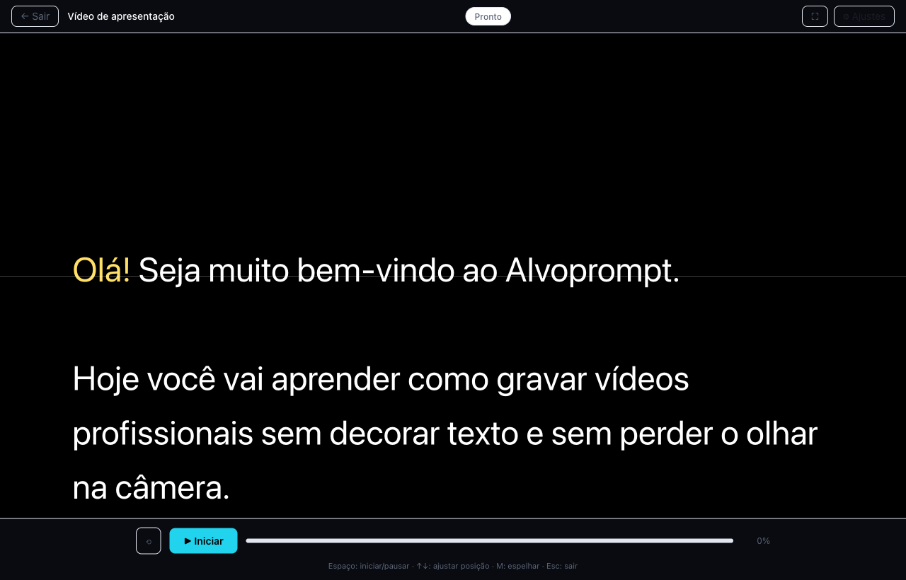
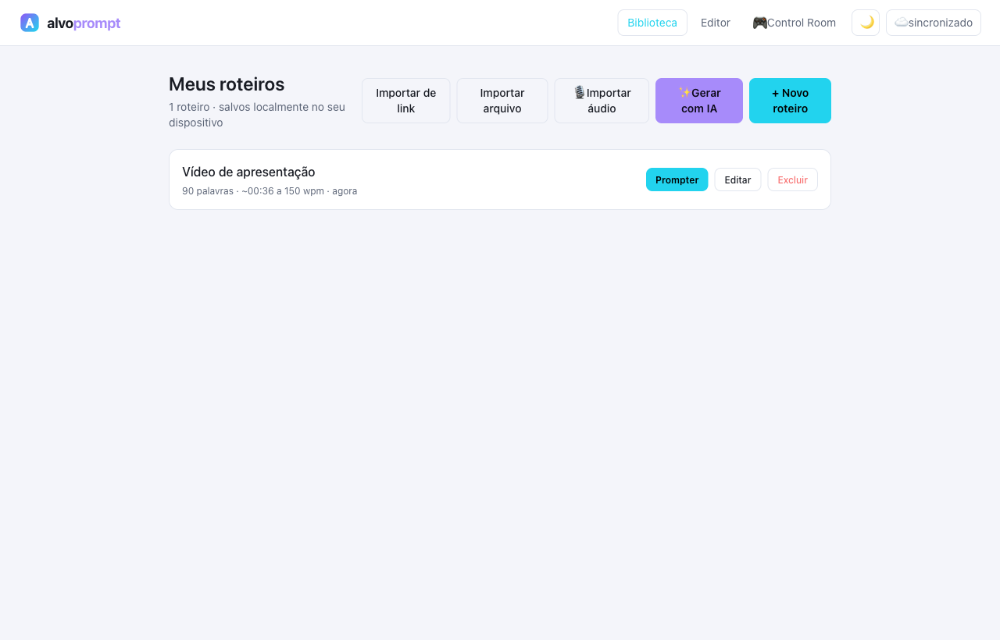
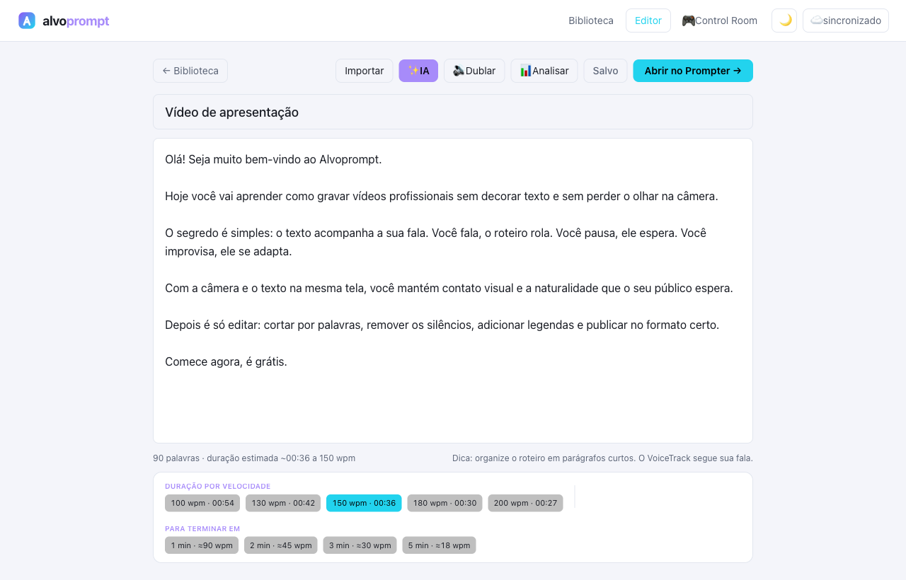
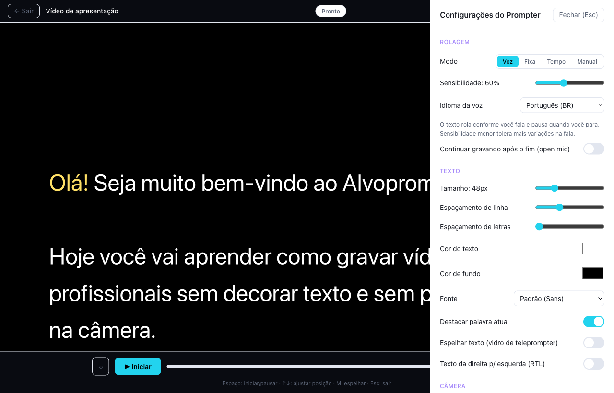
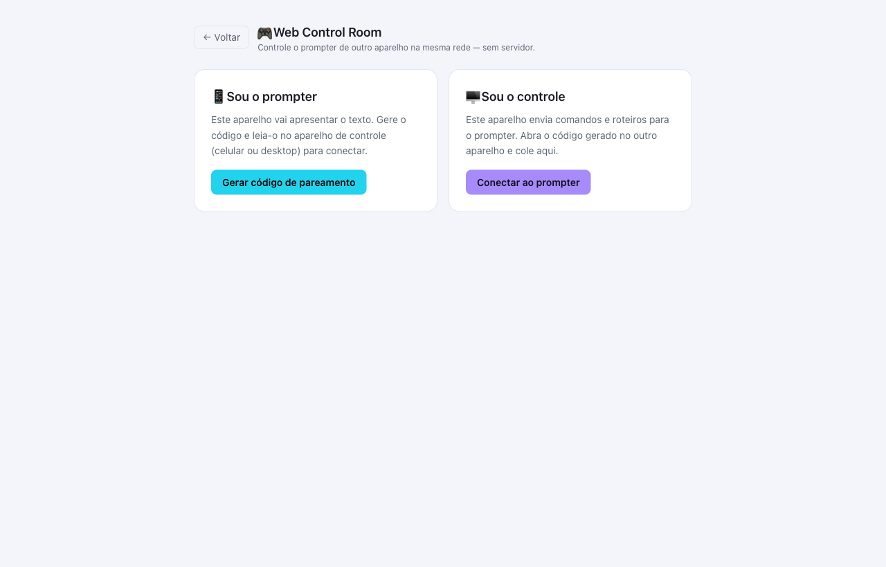
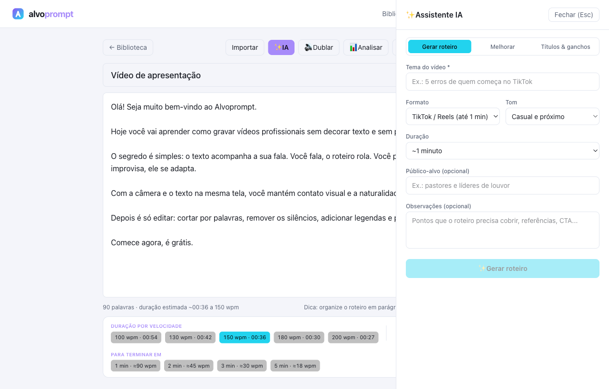
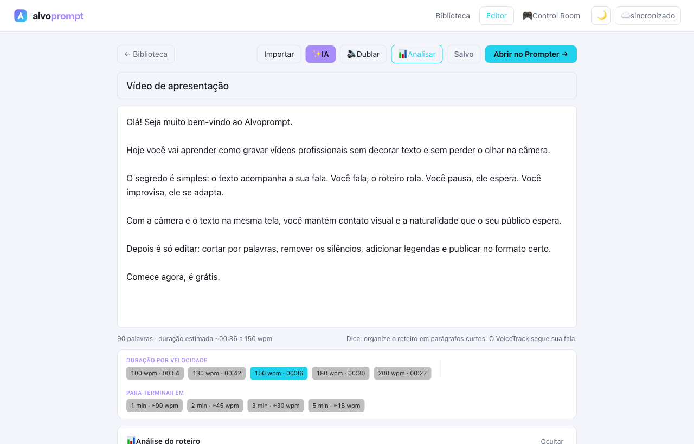

O melhor do BIGVU, Teleprompter Pro e PromptSmart em um só estúdio de bolso. Teleprompter com VoiceTrack que segue a sua fala, câmera + gravação nativa e editor de vídeo com IA — sem assinatura pesada e com privacidade de verdade.
Sem cartão de crédito · Gratuito para sempre

Biblioteca, editor, prompter e control room: tudo em uma interface limpa que funciona até no modo avião.

Crie, importe e gerencie quantos roteiros quiser — .txt, .md, .docx, PDF, áudio (transcrição automática) e até links do YouTube e Google Docs. Tudo salvo localmente no seu dispositivo.
Escreva ou cole seu texto e tenha tudo o que precisa ao alcance: duração por velocidade, modo tempo-alvo, análise de vícios de linguagem, dublagem com IA e muito mais.


O texto rola enquanto você fala, para quando pausa e retoma sozinho. Ajuste fonte, cor, velocidade, modo espelho, modo selfie, câmera e enquadramento em tempo real.
Controle o prompter de outro aparelho na mesma rede: play, pausa, posição e envio de roteiro — pareado por código ou QR, via WebRTC, sem nenhum servidor no meio.

Melhore o texto, entenda a duração e grave com apoio de voz — direto dentro do editor, sem abrir outra aba.

O painel de IA reescreve trechos selecionados, suaviza o texto, gera títulos e ganchos com hashtags e calcula a duração — com opção de usar a sua própria chave da OpenAI ou Groq.
Veja duração estimada, contagem de palavras e o ritmo de leitura. O Alvoprompt ainda aponta fillers ("né", "tipo", "ahã") e vícios de linguagem para você remover antes de gravar.

Analisamos a fundo os apps mais usados do mercado para fazer um só que entrega o que importa.
BIGVU
Teleprompter Pro
PromptSmart+
Alvoprompt
VoiceTrack com tolerância a paráfrase · câmera + gravação nativa · editor de vídeo com IA · preço transparente · 100% offline
Do roteiro à publicação: tudo em um lugar, funcionando até no modo avião.
O texto rola enquanto você fala, para quando pausa e retoma sozinho — com tolerância a paráfrase e sensibilidade ajustável.
Grava em qualidade nativa (até 4K), com mirinha de contato visual e open mic para continuar falando após o fim do roteiro.
Gere, melhore e crie títulos e ganchos com hashtags. Analise duração, palavras-chave e remova fillers e vícios de linguagem.
Legenda automática, temas profissionais, word highlight e tradução para 70+ idiomas com export SRT.
Corte por palavras da transcrição, remoção de silêncios (RMS), 9:16/1:1/16:9, green screen, Ken Burns, eye contact e reframe seguindo o rosto.
Controle o prompter de outro aparelho na mesma rede: play/pause, envio de roteiro e espelho — sem servidor, via WebRTC com QR.
Ouça o roteiro com narração IA e gere avatares (AI Twin visual) para usar na marca do vídeo.
Core 100% local: biblioteca no dispositivo, reconhecimento de fala on-device e nada vendido a terceiros.
Cole, escreva, importe .txt/.md/.docx/PDF, áudio, YouTube ou Google Docs — ou gere com IA.
Rolagem por voz (VoiceTrack), velocidade fixa ou manual. Modo espelho e modo selfie.
Câmera e texto na mesma tela, qualidade nativa, open mic pós-script e legendas ao vivo.
Corte por palavras, remova silêncios, redimensione, legende, aplique marca e música.
Exporte 9:16/1:1/16:9, gere clipes e SRT — pronto para YouTube, TikTok e Reels.
Se você precisa falar com naturalidade em frente à câmera, o Alvoprompt foi desenhado para você.
Esboço fluindo ao vivo com tolerância a paráfrase, para você pregar olhando para as pessoas, não para o papel.
Vídeos de resposta a lead, pitch e conteúdo de autoridade sem decorar roteiro — direto do seu fluxo comercial.
Grava 9:16 nativo, corta por palavras, gera clipes e legendas — da ideia ao post em minutos, diariamente.
Aulas gravadas com cadência natural, legendas em 70+ idiomas e SRT pronto para plataformas de curso.
Feedback de criadores, pregadores e vendedores na fase beta.
"Preguei o domingo inteiro olhando para a câmera. O VoiceTrack acompanha até quando eu improviso — isso mudou tudo para mim."
Rafael Martins
Pastor e criador de conteúdo
"Gravo resposta a lead todos os dias. Com o Alvoprompt o vídeo sai em 10 minutos, já cortado e com legenda pronta."
Carla Antunes
Consultora e vendedora digital
"Uso o control room com um tablet para rodar o prompter enquanto gravo com o celular. Funciona sem servidor nenhum."
Pedro Salles
Criador de vídeos para YouTube
| Capacidade | BIGVU | Teleprompter Pro | PromptSmart+ | Alvoprompt |
|---|---|---|---|---|
| Teleprompter core | ✅ | ✅ | ✅ | ✅✅ |
| VoiceTrack (rola com sua fala) | ✕ | ✕ | ✅ rígido | ✅✅ paráfrase |
| Offline / on-device | ✕ | ✅ | ✅ | ✅ core local |
| IA: roteiro | ✅ | ✕ | ✕ | ✅ |
| IA: legendas + tradução | ✅ 70+ | ✕ | ✕ | ✅ 70+ |
| Câmera + texto na mesma tela | ✅ | ✕ | ✅ | ✅✅ |
| Gravação HD no app | ✅ | ✕ | ⚠️ reduzida | ✅ nativa |
| Editor IA (corte, reframe, green screen) | ✅ | ✕ | ✕ | ✅ |
| Modo espelho (hardware) | ✕ | ✅ | ✕ | ✅ |
| Web Control Room | ✕ | ✕ | ✅ | ✅ sem servidor |
| Preço transparente | ✕ | ✅ | ✕ | ✅✅ free + única |
Free para sempre, compra única para os que odeiam assinatura e Studio para quem quer IA completa. Cancele em um toque, quando quiser.
Free
R$ 0
para sempre, sem cartão
Pro
R$ 149
compra única · pague uma vez e fica seu
Studio
R$ 29/mês
ou R$ 249/ano (2 meses grátis)
Não. O core (prompter, VoiceTrack e gravação) funciona 100% offline, até no modo avião. Só os recursos de IA em nuvem (geração de roteiro, dublagem, avatares) precisam de conexão.
Sim. É uma PWA instalável (funciona no Chrome/Edge e no iOS via "Adicionar à Tela de Início") e também é empacotado nativamente para Android e iOS com Capacitor.
O reconhecimento de voz acontece no seu dispositivo e seus roteiros ficam na sua biblioteca local. Não vendemos dados e nada é coletado sem você escolher usar os recursos de nuvem.
Sim, PT-BR nativo — e ao contrário do PromptSmart, ele tolera paráfrase: você pode reformular a frase que a rolagem continua te acompanhando.
.txt, .md, .docx, PDF, áudio (transcrição automática) e links — incluindo YouTube (legendas) e Google Docs. Também dá para colar texto direto.
Sim, em um toque e direto no app. Sem ligação, sem formulário, sem pegadinha — o Pro nem é assinatura, é compra única.
Comece grátis agora. Seus primeiros vídeos saem em menos de 5 minutos — sem cartão, sem burocracia.
PWA instalável · Android · iOS